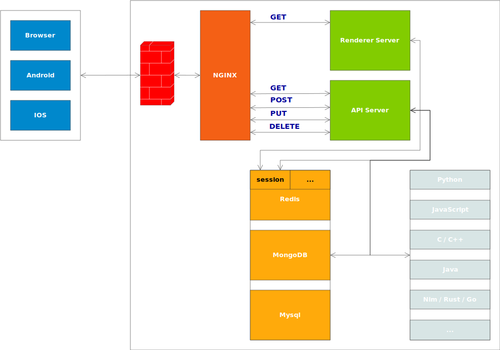

System Design¶
这套系统可以称之为 d-sys，其工作由许多更小的子系统完成。系统的结构图如下：
Client Server
+----------------+ +------------------------------------------------------------------------------------------------+
| +------------+ | | +---+ Load Balance +-------------------+ |
| | Browser | | | | F | GET (HTML) | | |
| +------------+ | | | I | +-----------+ .-------------→ | Renderer Server | ←--⬝ |
| | | | R | | | | | | | |
| +------------+ | GET POST | | E | | | | +-------------------+ | |
| | Android | | ←------------→ | | | ←-→ | NGINX | ←-------→ | | |
| +------------+ | PUT DELETE | | W | | | | +-------------------+ | |
| | | | A | | | | GET POST | | | |
| +------------+ | | | L | +-----------+ .-------------→ | API Server | ←----⬝ |
| | IPhone | | | | L | PUT DELETE | | | | |
| +------------+ | | +---+ +-------------------+ | | |
+----------------+ | | | |
| | | |
| ⬝--------------------------------------⬝ | |
| | ⬝---------------------⬝-⬝--------------⬝ |
| | | | | |
| | | | | |
| | | | | |
| +------| |------------+ | | +---------------------+ |
| | +----↓ ↓----------+ | | | | +-----------------+ | |
| | | session | ... | | | | | | Python | | |
| | |-----------------| | | | | +-----------------+ | |
| | | | | | | | +-----------------+ | |
| | | Redis | | | | | | JavaScript | | |
| | | | | | | | +-----------------+ | |
| | +-----------------+ | | | | +-----------------+ | |
| | | | | | | C/C++ | | |
| | +-----------------+ | | | | +-----------------+ | |
| | | | | | | | +-----------------+ | |
| | | MySQL | | ←------⬝ ⬝------→ | | Java | | |
| | | | | | +-----------------+ | |
| | +-----------------+ | | +-----------------+ | |
| | | | | Nim/Rust/Go | | |
| | +-----------------+ | | +-----------------+ | |
| | | | | | +-----------------+ | |
| | | MongoDB | | | | ... | | |
| | | | | | +-----------------+ | |
| | +-----------------+ | | | |
| +---------------------+ +---------------------+ |
| |
| Data Center Algorithm services |
+------------------------------------------------------------------------------------------------+

客户端 （Client）包括 3 个部分，分别为 Browser、Android、IPhone 。客户端的构建遵循以下规则：
- Browser 基于 JavaScript React 构建
Android IPhone 基于 JavaScript React 构建单页应用，使用 cordava 等工具编译到移动设备，以 WebView 的方式运行
Android IPhone 在需要的情况下，使用 Java / Android 和 Obj-C Swift /IPhone 构建原生应用
防火墙 （FIRE WALL） 提供流量安全，防范 ddos、IP 黑名单、数据流量控制、… 防火墙直接使用云服务商的服务
前端代理使用 NGINX，提供负载均衡、静态文件服务。基于负载均衡，形成应用服务器的水平扩展。前端代理直接使用云服务商的服务
应用服务器包括 2 个：渲染服务器（Renderer Server）、调度服务器（API Server）:
- Renderer Server 基于 node.js webship 提供 HTTP 服务器引擎，只支持 HTTP GET 请求方法，也就是说，这个服务器只提供获取的操作，不提供创建、修改、删除的操作。开发者不关心服务器路由的开发（由 webship 引擎后台自动完成），只专注 HTML 页面 （使用 JavaScript React 组件） 的呈现
注解
渲染服务器（Renderer Server） grass 只输出 HTML 页面。
API Server 基于 node.js webship 提供 HTTP 服务器引擎，支持所有标准 HTTP 请求方法，即提供获取、创建、修改、删除的操作。这个服务器不输出 HTML 页面，只输出数据，大部分是 application/json （JSON） 的格式。开发者只关心服务器路由的开发 ——- 即系统数据资源、计算资源的调度
注解
调度服务器（API Server） rocket 不输出 HTML 页面，只输出数据。
数据中心（Data Center）至少包括 3 个：Redis、MySQL、MongoDB：
- Redis 提供会话数据存储、重要数据缓存、消息队列数据存储的服务
MySQL 提供重要的、安全的、不允许丢失的数据存储，比如用户账户、金融账单、…
MongoDB 提供采集的、基本不需要修改的只需要获取的、允许丢失的数据存储，比如地理坐标、矿石属性、…
算法服务（Algorithm services）提供特定的算法服务（包括图形生成），根据使用的算法技术使用不同的编程语言，比如 GIS 地图服务器、散点高密度计算、…：
- Python 使用 django、flask 提供输出服务
JavaScript 使用 webship 提供输出服务
C/C++ 使用 libuv 提供输出服务
Java 使用 netty 提供输出服务
Nim 使用 jester 提供输出服务
Rust 使用 mio 提供输出服务
Go 使用 fasthttp 提供输出服务
注解
以上所列的服务框架仅为推荐，而非限定